About
Theoretical physicist with expertise in quantum optics, ultracold atomic gases, and high-performance computing for numerical simulations. Experienced in developing analytical models, optimal control strategies, and custom GPU-accelerated software for a broad variety of quantum systems from individual atoms to many-body cavity QED setups.
Proven ability to independently design and execute complex research projects from theoretical modeling and large-scale simulation to data analysis and publication in peer-reviewed journals, while collaborating effectively across theoretical and experimental teams.
Experience
-
Junior Researcher (since April 2023)Waseda University, Tokyo, Japan
- funded by JST Moonshot R&D Goal 6 Project: Large-scale quantum hardware based on nanofiber cavity QED led by Prof. Takao Aoki
- developed theoretical models and numerical simulations to apply quantum computing performance benchmarks to neutral-atom qubits in a nanofiber cavity QED platform, guiding experimental optimization of quantum gate fidelities
- designed a custom GPU-accelerated numerical FDTD solver for Maxwell’s equations to model laser-induced trapping potentials near optical nanofibers and calculate fast and efficient atom-loading protocols
-
JSPS Postdoctoral Fellow (September 2022 - March 2023)OIST, Okinawa, Japan
- extended PhD work on many-body quantum dynamics and control of interacting quantum gases
- supervised and mentored three PhD students and two research interns, providing training in numerical simulation and analytical techniques
-
Research Assistant (January 2017 - August 2017)Saarland University, Germany
- completed two publications based on MSc work
- teaching assistant for undergraduate classes
Education
-
PhD in Physics (September 2017 - August 2022)Okinawa Institute of Science and Technology (OIST), Japan | Advisor: Prof. Thomas Busch
-
MSc in Physics (October 2014 - December 2016)Saarland University, Germany | Advisor: Prof. Giovanna Morigi
-
BSc in Physics (October 2011 - August 2014)Saarland University, Germany | Advisor: Prof. Giovanna Morigi
Fellowships & Awards
-
Research Fellowship for Young Scientists (DC2) (April 2021 - March 2023)Japan Society for the Promotion of Science | Grant: JSPS KAKENHI 21J10521Stipend: JPY 200,000 (~ USD 1800 at time of award) per month & Research Grant of JPY 900,000 (~ USD 8200 at time of award)
-
Outstanding Student Award (April 2021 - March 2023)Okinawa Institute of Science and Technology Graduate UniversityAnnual tuition of JPY 540,000 (~ USD 4800 at time of award) waived in recognition of JSPS fellowship
-
Physical Review Letters Editor's Suggestion (January 2022)American Physical Society | Publication: Phys. Rev. Lett. 128, 053401 (2022).
- APS flagship journal and one of the most prestigious physics publications with an acceptance rate of less than 25%
- only about one in seven Letters are highlighted as an editor's suggestion due to their particular importance, innovation, and broad appeal
Technical Skills
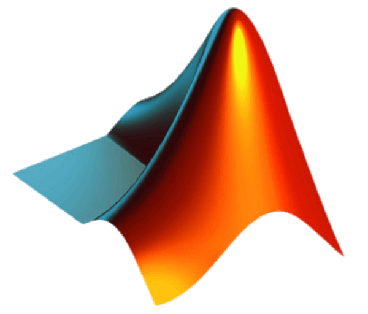
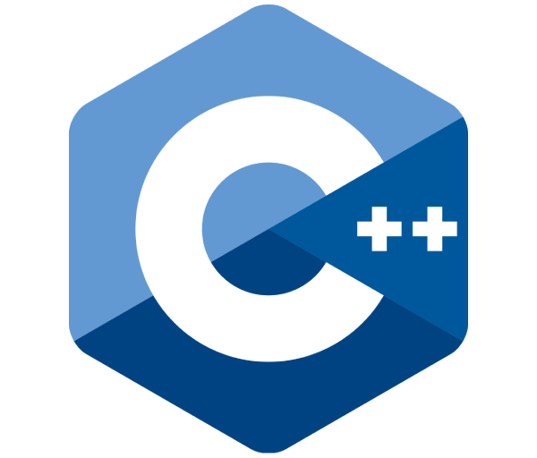
Projects
-
Hikari.jl - GPU-accelerated finite-difference time-domain (FDTD) solver for calculating laser-generated atomic trapping potentials close to optical nanofibers
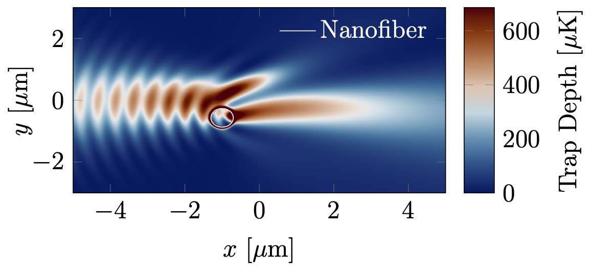
Code: Hikari.jlTechnologies:Contribution: T. Keller
A custom finite-difference time-domain (FDTD) software package with CUDA GPU-acceleration for numerically solving Maxwell's equations and calculating the atomic trapping potential created by a Gaussian laser beam reflected off an optical nanofiber. Supports dynamic polarizability calculations for Cesium and Rubidium atoms.
-
Addressing requirements for crosstalk-free quantum-gate operation in many-body nanofiber cavity QED systems
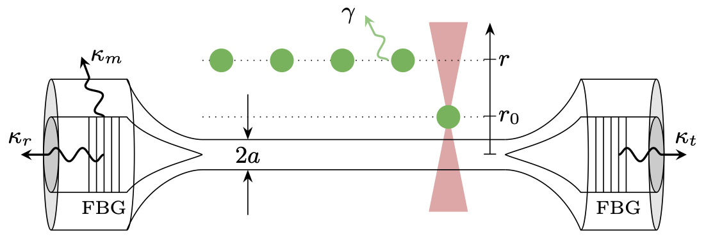
Contribution: T. Keller, S. Kikura, R. Asaoka, Y. Suzuki, Y. Tokunaga, and T. Aoki
A distributed network architecture in which flying photons connect individual modules containing stationary atomic qubits is a promising approach for scaling up neutral-atom based quantum-computing platforms. We consider an all-fiber based platform consisting of nanofiber cavity QED systems interconnected via conventional optical fibers. Each nanofiber cavity is strongly coupled to multiple atoms through its evanescent field, and atom pairs within one cavity (local) or two distant cavities (remote) are addressed for performing photon-mediated quantum logic gates on them by controlling the effective light-matter coupling via local AC Stark shifts and atom-fiber distance. We numerically evaluate the required parameters for achieving nearly crosstalk-free gate operation using these targeting methods by calculating average gate fidelities, success probabilities, and Pauli error rates for both local and remote controlled-Z gates. For the case of perfect addressing, we also analytically determine the theoretical optimum gate performance as limited by cavity reflectivity, cooperativity, and qubit level-splitting.
-
Fermionization of a few-body Bose system immersed into a Bose-Einstein condensate
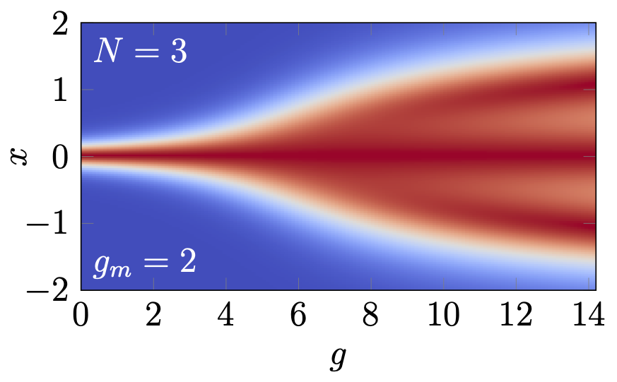
Contribution: T. Keller, T. Fogarty, and T. Busch
We study the recently introduced self-pinning transition [Phys. Rev. Lett. 128, 053401 (2022)] in a quasi-one-dimensional two-component quantum gas in the case where the component immersed into the Bose-Einstein condensate has a finite intraspecies interaction strength. As a result of the matter-wave backaction, the fermionization in the limit of infinite intraspecies repulsion occurs via a first-order phase transition to the self-pinned state, which is in contrast to the asymptotic behavior in static trapping potentials. The system also exhibits an additional superfluid state for the immersed component if the interspecies interaction is able to overcome the intraspecies repulsion. We approximate the superfluid state in an analytical model and derive an expression for the phase transition line that coincides with well-known phase separation criteria in binary Bose systems. The full phase diagram of the system is mapped out numerically for the case of two and three atoms in the immersed component.
-
Self-Pinning Transition of a Tonks-Girardeau Gas in a Bose-Einstein Condensate (Editor's Suggestion)
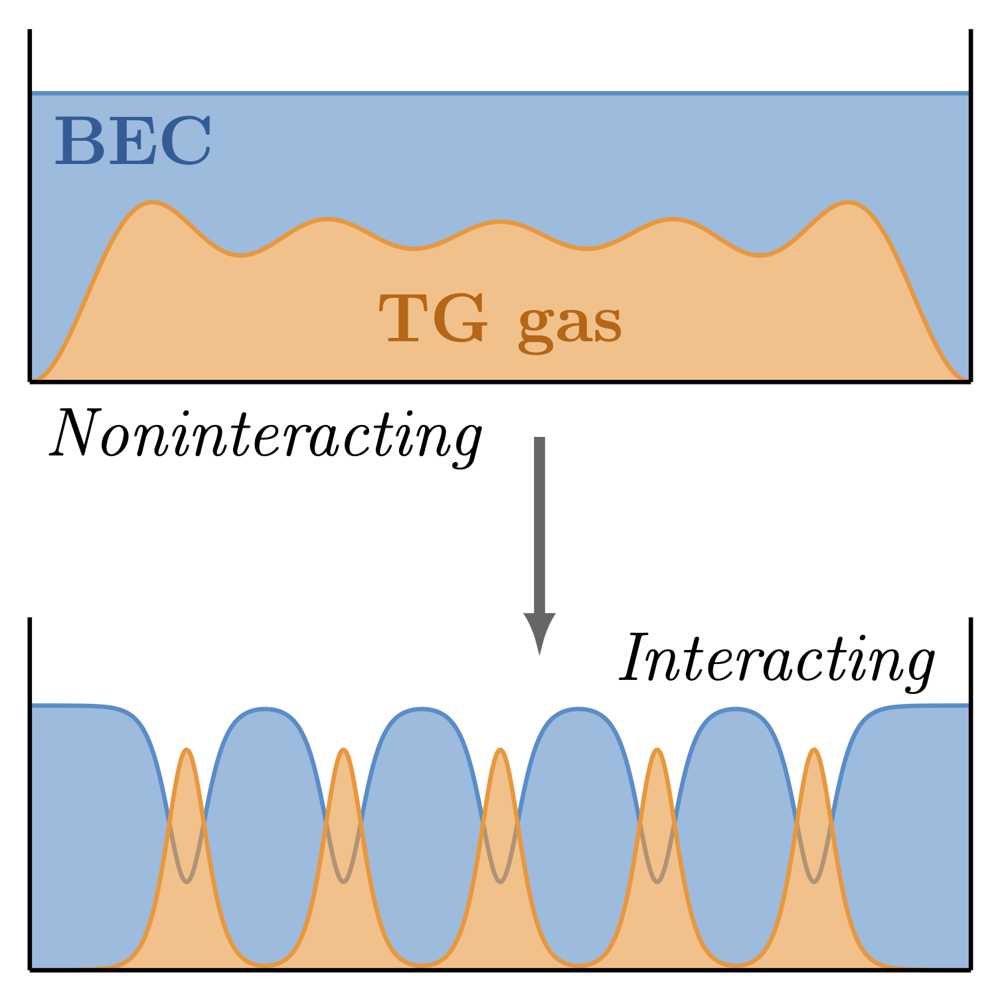
Contribution: T. Keller, T. Fogarty, and T. Busch
We show that a Tonks-Girardeau (TG) gas that is immersed in a Bose-Einstein condensate can undergo a transition to a crystal-like Mott state with regular spacing between the atoms without any externally imposed lattice potential. We characterize this phase transition as a function of the interspecies interaction and temperature of the TG gas, and show how it can be measured via accessible observables in cold atom experiments. We also develop an effective model that accurately describes the system in the pinned insulator state and which allows us to derive the critical temperature of the transition.
-
Adiabatic critical quantum metrology cannot reach the Heisenberg limit even when shortcuts to adiabaticity are applied
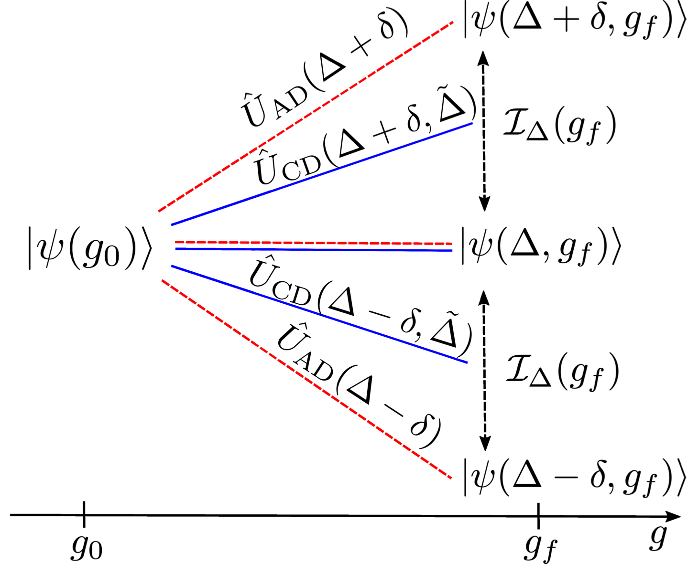
Publication: Quantum 5, 489 (2021).Contribution: K. Gietka, F. Metz, T. Keller, and J. Li
We show that the quantum Fisher information attained in an adiabatic approach to critical quantum metrology cannot lead to the Heisenberg limit of precision and therefore regular quantum metrology under optimal settings is always superior. Furthermore, we argue that even though shortcuts to adiabaticity can arbitrarily decrease the time of preparing critical ground states, they cannot be used to achieve or overcome the Heisenberg limit for quantum parameter estimation in adiabatic critical quantum metrology. As case studies, we explore the application of counter-diabatic driving to the Landau-Zener model and the quantum Rabi model.
-
Feshbach engine in the Thomas-Fermi regime
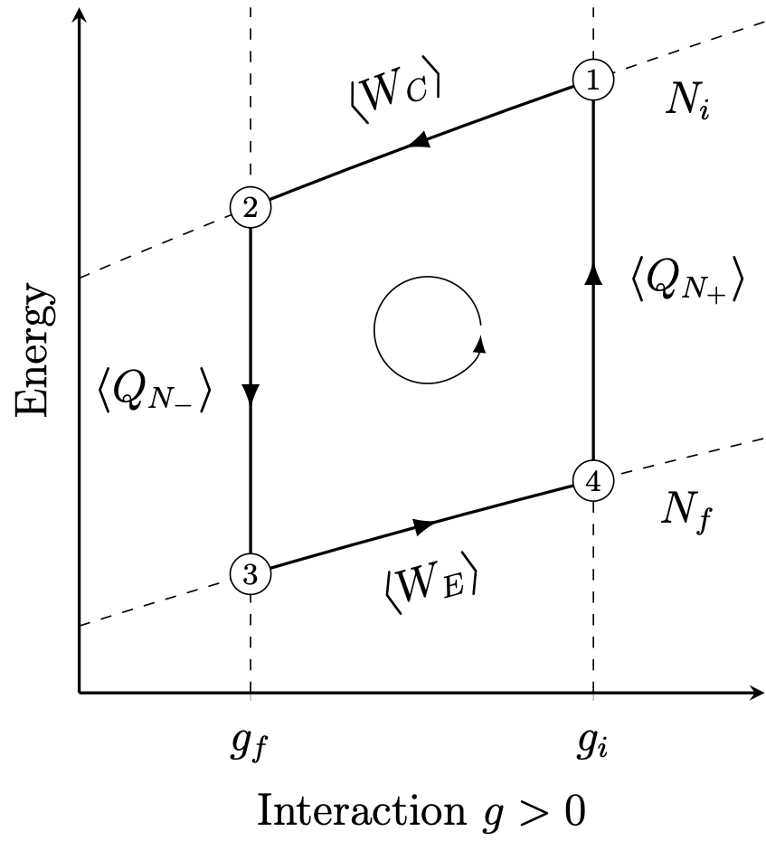
Contribution: T. Keller, T. Fogarty, J. Li, and T. Busch
Bose-Einstein condensates can be used to produce work by tuning the strength of the interparticle interactions with the help of Feshbach resonances. In inhomogeneous potentials, these interaction ramps change the volume of the trapped gas, allowing one to create a thermodynamic cycle known as the Feshbach engine. However, in order to obtain a large power output, the engine strokes must be performed on a short timescale, which is in contrast to the fact that the efficiency of the engine is reduced by irreversible work if the strokes are done in a nonadiabatic fashion. Here we investigate how such an engine can be run in the Thomas-Fermi regime and present a shortcut to adiabaticity that minimizes the irreversible work and allows for efficient engine operation.
-
Quenches across the self-organization transition in multimode cavities
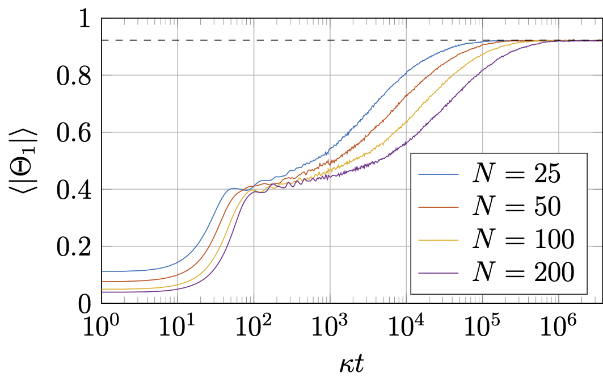
Contribution: T. Keller, V. Torggler, S. Jäger, S. Schütz, H. Ritsch, and G. Morigi
A cold dilute atomic gas in an optical resonator can be radiatively cooled by coherent scattering processes when the driving laser frequency is tuned close to but below the cavity resonance. When the atoms are sufficiently illuminated, their steady state undergoes a phase transition from a homogeneous distribution to a spatially organized Bragg grating. We characterize the dynamics of this self-ordering process in the semi-classical regime when distinct cavity modes with commensurate wavelengths are quasi-resonantly driven by laser fields via scattering by the atoms. The lasers are simultaneously applied and uniformly illuminate the atoms; their frequencies are chosen so that the atoms are cooled by the radiative processes, and their intensities are either suddenly switched or slowly ramped across the self-ordering transition. Numerical simulations for different ramp protocols predict that the system will exhibit long-lived metastable states, whose occurrence strongly depends on the initial temperature, ramp speed, and the number of atoms.
-
Phases of cold atoms interacting via photon-mediated long-range forces
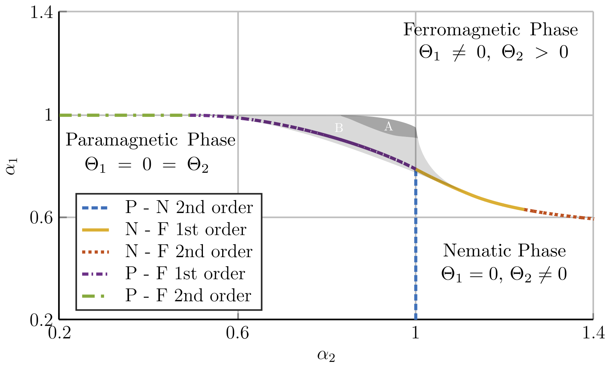
Publication: J. Stat. Mech. 064002 (2017).Contribution: T. Keller, S. Jäger, and G. Morigi
Atoms in high-finesse optical resonators interact via the photons they multiply scatter into the cavity modes. The dynamics is characterized by dispersive and dissipative optomechanical long-range forces, which are mediated by the cavity photons, and exhibits a steady state for certain parameter regimes. In standing-wave cavities the atoms can form stable spatial gratings. Moreover, their asymptotic distribution is a Maxwell–Boltzmann whose effective temperature is controlled by the laser parameters. In this work we show that in a two-mode standing-wave cavity the stationary state possesses the same properties and phases of the generalized Hamiltonian mean field model in the canonical ensemble. This model has three equilibrium phases: a paramagnetic, a nematic, and a ferromagnetic one, which here correspond to different spatial orders of the atomic gas and can be detected by means of the light emitted by the cavities. We further discuss perspectives for investigating in this setup the ensemble inequivalence predicted for the generalized Hamiltonian mean field model.
-
Probing the out-of-equilibrium dynamics of two interacting atoms
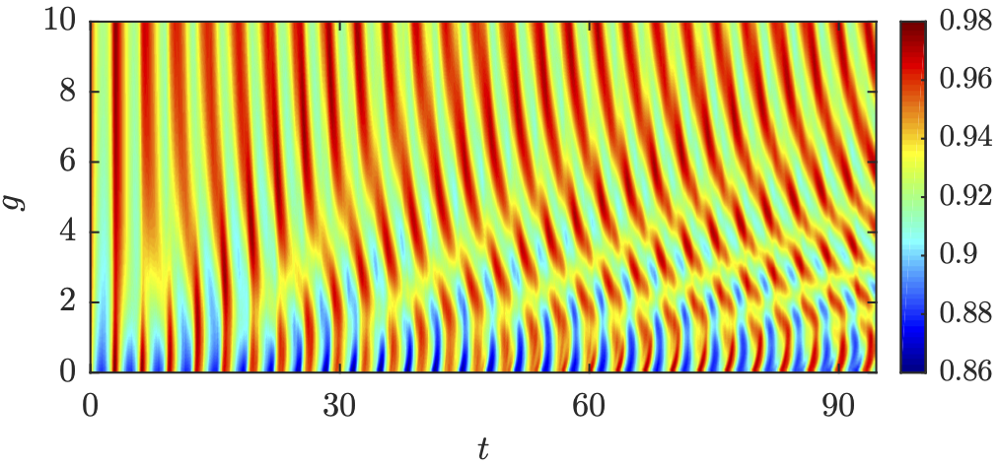
Contribution: T. Keller and T. Fogarty
We study the out-of-equilibrium dynamics of two interacting atoms in a one-dimensional harmonic trap after a quench by a tightly pinned impurity atom. We make use of an approximate variational calculation called the Lagrange-mesh method to solve the Schrödinger equation as a function of interparticle interaction and impurity quench strength. We investigate the out-of-equilibrium dynamics by calculating the Loschmidt echo which quantifies the irreversibility of the system following the quench, while its probability distribution after long times can be used to identify distinct dynamical regimes. These quantities are related to the spectral function which describes the full dynamical spectrum, and we show through a thorough examination of the parameter space the existence of distinct scattering states and collective oscillations. This work demonstrates how these dynamics are strongly dependent on the interaction strength between the atoms and may be tuned to observe the establishment of the orthogonality catastrophe in few-body systems.
List of Publications
-
Addressing requirements for crosstalk-free quantum-gate operation in many-body nanofiber cavity QED systemsT. Keller, S. Kikura, R. Asaoka, Y. Suzuki, Y. Tokunaga, and T. Aoki
-
Fermionization of a few-body Bose system immersed into a Bose-Einstein condensateT. Keller, T. Fogarty, and T. Busch
-
Self-Pinning Transition of a Tonks-Girardeau Gas in a Bose-Einstein CondensateT. Keller, T. Fogarty, and T. BuschPhys. Rev. Lett. 128, 053401 (2022). (Editor's Suggestion)
-
Adiabatic critical quantum metrology cannot reach the Heisenberg limit even when shortcuts to adiabaticity are appliedK. Gietka, F. Metz, T. Keller, and J. Li
-
Feshbach engine in the Thomas-Fermi regimeT. Keller, T. Fogarty, J. Li, and T. Busch
-
Quenches across the self-organization transition in multimode cavitiesT. Keller, V. Torggler, S. Jäger, S. Schütz, H. Ritsch, and G. Morigi
-
Phases of cold atoms interacting via photon-mediated long-range forcesT. Keller, S. Jäger, and G. Morigi
-
Probing the out-of-equilibrium dynamics of two interacting atomsT. Keller and T. Fogarty
Languages
- German: Native
 English: Fluent (TOEFL Score 114/120)
English: Fluent (TOEFL Score 114/120)- Japanese: Intermediate (JLPT N2 Certificate)